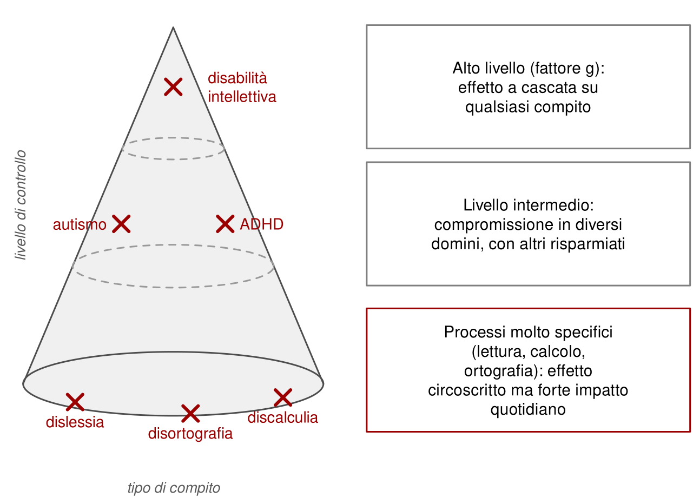
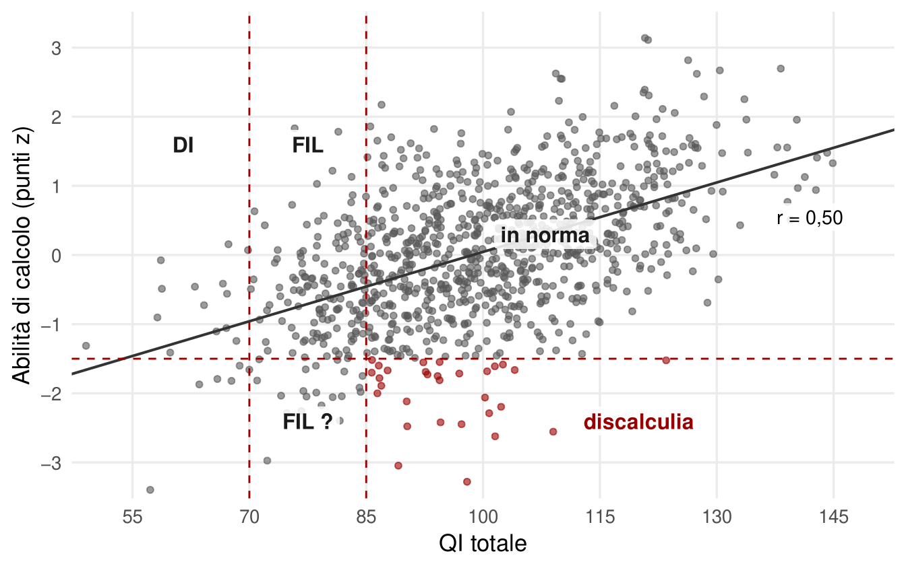
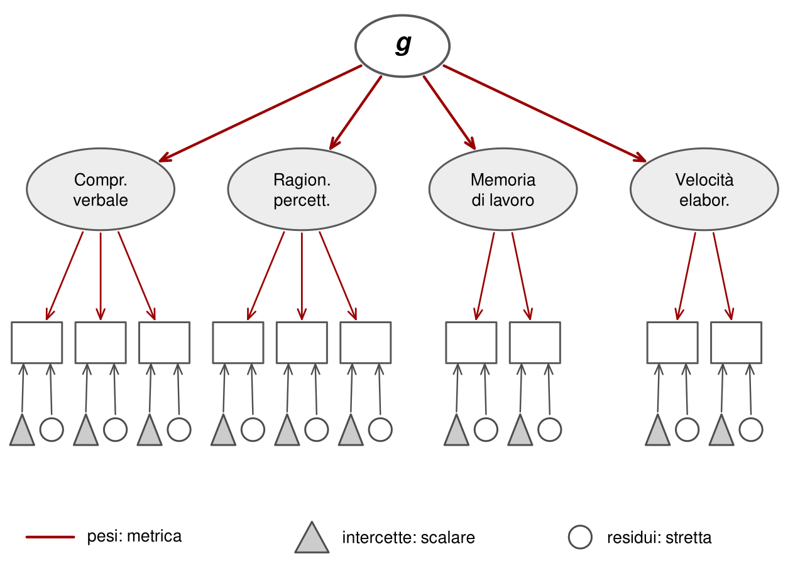

19 Valutare l’intelligenza nel neurosviluppo
La valutazione dell’intelligenza è parte integrante, e spesso obbligatoria, di quasi ogni percorso diagnostico nel neurosviluppo. Serve a escludere o confermare una disabilità intellettiva, a descrivere punti di forza e di debolezza, a orientare gli interventi. Ma una batteria di intelligenza è stata costruita e tarata su una popolazione generale. Quando la si usa con persone che hanno un funzionamento diverso dalla media proprio negli aspetti che il test misura, sorgono problemi specifici.
Questo capitolo esamina come si valuta l’intelligenza nelle principali condizioni, quali profili medi emergono dalla ricerca e perché quei profili vanno interpretati con cautela. Un avvertimento preliminare: i profili medi descrivono gruppi. Dedurre una diagnosi dal profilo di un singolo individuo è un errore.
19.1 Disabilità intellettiva
La disabilità intellettiva richiede tre elementi: limitazioni nel funzionamento intellettivo, confermate dalla valutazione clinica e da test standardizzati individuali; limitazioni nel comportamento adattivo, cioè nella capacità di soddisfare le richieste di autonomia e responsabilità sociale attese per l’età e il contesto; esordio durante lo sviluppo (Association, 2022).
Tradizionalmente la gravità veniva stabilita in base al QI: lieve sotto 70, moderata sotto 50–55, grave sotto 35–40, profonda sotto 20–25. Gli approcci attuali la determinano soprattutto in base al funzionamento adattivo e al bisogno di supporto, valutati in tre aree: concettuale, che comprende linguaggio, apprendimenti e memoria; sociale, che comprende comunicazione, relazioni, rispetto delle regole e vulnerabilità alla manipolazione; pratica, che comprende cura di sé, gestione della casa e del denaro, lavoro e vita autonoma. Il comportamento adattivo si misura con scale standardizzate, di solito compilate attraverso un’intervista a chi conosce bene la persona, ed espresse sulla stessa metrica del QI. Il QI resta un criterio di fatto necessario ma non sufficiente.
Le forme sindromiche tendono a mostrare profili cognitivi caratteristici, pur con grande variabilità individuale. Nella sindrome di Down sono descritte difficoltà particolarmente marcate nel linguaggio espressivo e nella memoria verbale a breve termine, con componenti visuospaziali relativamente meno compromesse; nella sindrome di Williams il quadro è spesso opposto, con abilità verbali relativamente preservate e difficoltà visuospaziali gravi (Grieco et al., 2015; Martens et al., 2008). Anche questi profili «tipici» sono tendenze di gruppo, da verificare sui casi concreti. Le forme non sindromiche sono estremamente eterogenee e non hanno profili caratteristici: ogni caso fa storia a sé, e il profilo va valutato sempre.
19.2 Autismo: un paradosso
Fra le persone con una diagnosi di autismo, una quota consistente, attorno a un terzo nelle stime epidemiologiche statunitensi, ha anche una disabilità intellettiva (Maenner et al., 2023). Eppure le varianti genetiche comuni associate all’autismo sono, in media, associate a un’intelligenza leggermente più alta: la correlazione genetica fra i due tratti è debolmente positiva (Savage et al., 2018). Come si conciliano i due dati?
Una possibile spiegazione è un’eziologia mista. Una parte dei casi, spesso con disabilità intellettiva, sarebbe legata a varianti genetiche rare o mutazioni nuove di grande effetto, simili per meccanismo alle forme sindromiche (Satterstrom et al., 2020). Il resto rifletterebbe la coda di un tratto poligenico diffuso, in parte associato a varianti favorevoli alle abilità cognitive.
Un’altra ipotesi parla di intelligenza sbilanciata (Crespi, 2016): uno sviluppo disarmonico, con alcune abilità forti, talvolta eccezionali, e un funzionamento quotidiano deludente, soprattutto rispetto alle richieste sociali. Le abilità visuospaziali, il ragionamento fluido e alcune funzioni sensoriali risultano spesso buone; le conoscenze verbali e l’uso del linguaggio più deboli; l’attenzione molto focalizzata ma poco flessibile.
Nelle scale Wechsler le cadute più evidenti riguardano memoria di lavoro e velocità di elaborazione, che possono scendere di circa una deviazione standard. È però anche il profilo più comune di tutta la neurodivergenza, quindi poco specifico.
C’è infine un problema di campionamento. Una meta-analisi degli studi di ricerca sull’autismo ha stimato che circa il 94% dei partecipanti non aveva una disabilità intellettiva (Russell et al., 2019). Le casistiche cliniche epidemiologiche ne contano molti di più. La ricerca descrive soprattutto la parte ad alto funzionamento dello spettro, oppure le casistiche cliniche ne descrivono soprattutto la parte a basso funzionamento? Con un tratto dimensionale e confini diagnostici in movimento, la domanda potrebbe non avere una risposta semplice.
19.3 ADHD
Per l’ADHD la situazione genetica è opposta a quella dell’autismo: la correlazione genetica con l’intelligenza è moderatamente negativa (Demontis et al., 2023). A livello dei punteggi, però, la differenza è meno marcata. La comorbilità con la disabilità intellettiva è contenuta. Una meta-analisi ha stimato per i gruppi con ADHD un QI totale medio inferiore di circa 0,6 deviazioni standard, quasi dieci punti (Frazier et al., 2004). Una parte della differenza dipende però dalle prove che chiedono proprio attenzione sostenuta e memoria di lavoro, cioè dalle stesse difficoltà che definiscono il disturbo.
Il profilo tipico alle scale Wechsler mostra una compromissione marcata della memoria di lavoro, di circa una deviazione standard, e una compromissione parziale della velocità di elaborazione. L’osservazione qualitativa dei protocolli rivela spesso una buona velocità accompagnata da molti errori. Se però si considerano tutti i tipi di compito cognitivo studiati nelle meta-analisi, il profilo medio appare più piatto di quanto suggerirebbe l’idea di un deficit esecutivo specifico.
19.4 Disturbi specifici dell’apprendimento
In teoria i disturbi specifici dell’apprendimento rappresentano il livello più circoscritto della compromissione cognitiva. Il modello a cono proposto da Cornoldi e Vecchi lo rende visibile: in cima stanno le compromissioni di alto livello, come la disabilità intellettiva, con effetti a cascata su qualsiasi compito; nel mezzo quelle di livello intermedio, come autismo e ADHD, che colpiscono diversi domini; alla base quelle che riguardano processi molto specifici, come lettura, scrittura e calcolo (Cornoldi & Vecchi, 2003).
La specificità, però, è imposta per definizione. La disabilità intellettiva è un criterio di esclusione esplicito; il funzionamento intellettivo limite, con QI fra 70 e 85, è un elemento di attenzione, e spesso si richiede che almeno alcune aree dell’intelligenza siano nella norma. In passato si richiedeva una discrepanza fra QI e abilità scolastica. Ma le abilità scolastiche sono correlate con il fattore generale sia a livello fenotipico sia genetico. Un disturbo del calcolo è «specifico» non perché il calcolo sia indipendente dall’intelligenza, ma perché lo si definisce escludendo chi ha un’intelligenza bassa (Figura 19.2).

L’incoerenza dei criteri di inclusione ed esclusione fra gli studi, inevitabile perché i criteri stessi sono arbitrari, produce risultati incoerenti. Studiare dimensioni continue in modo multivariato, senza imporre confini che in natura non esistono, è più informativo.
Nei dati clinici italiani, i profili medi dei bambini con diagnosi di disturbo dell’apprendimento mostrano un andamento ricorrente: comprensione verbale e ragionamento percettivo nella norma o vicini, memoria di lavoro e velocità di elaborazione più bassi. La forma è simile nella dislessia, nella disortografia, nella discalculia e nei quadri misti; cambiano piuttosto l’entità delle cadute e la posizione complessiva (Giofrè et al., 2017; Toffalini et al., 2017). Un andamento analogo si osserva negli adulti con diagnosi di disturbo dell’apprendimento (Pizzigallo et al., 2023).
19.5 Il problema dell’invarianza di misura
Quando si usa una batteria in una popolazione diversa da quella su cui è stata costruita, bisogna chiedersi se i punteggi abbiano lo stesso significato. È la questione dell’invarianza di misura, che si articola in livelli successivi (Meredith, 1993; Putnick & Bornstein, 2016).
| Livello | Domanda | Situazione tipica nei gruppi clinici |
|---|---|---|
| Configurale | La struttura dei fattori è la stessa? | Di solito garantita dalla costruzione della batteria |
| Metrica | I legami fra subtest, indici e fattore generale sono uguali? | Spesso violata, con conseguente incertezza interpretativa |
| Scalare | A parità di abilità vera si ottiene lo stesso punteggio? | Spesso violata: lo stesso QI non indica lo stesso livello di g |
| Stretta | L’errore di misura è lo stesso? | Spesso violata, ma con conseguenze minori |

L’invarianza scalare è la più importante per l’interpretazione. Se un gruppo ottiene punteggi più bassi in alcuni subtest a parità di abilità generale, il QI totale di quel gruppo sottostima l’abilità generale. E la mancanza di invarianza non riguarda solo i gruppi clinici: può interessare fasce d’età, generi, gruppi linguistici e culturali, persone bilingui.
Una lettura rigida concluderebbe che senza invarianza completa non si possa usare lo strumento. In pratica lo si usa comunque, perché spesso è l’unico disponibile o perché le alternative presentano lo stesso problema; perché tarature separate per ogni gruppo non sarebbero praticabili; perché lo scopo può essere solo escludere una disabilità intellettiva; perché la violazione può essere parziale e incidere poco sul calcolo dei punteggi. Serve allora sapere dove sta il problema.
Analisi su dati italiani della WISC-IV, che confrontano il campione normativo con ampi campioni clinici di bambini con disturbi dell’apprendimento o ADHD, indicano che in entrambi i gruppi i subtest di memoria di lavoro e velocità di elaborazione hanno medie più basse di quanto l’abilità generale farebbe prevedere, mentre gli altri no. Nei disturbi dell’apprendimento, inoltre, il fattore generale è rappresentato meno bene in quasi tutti gli indici, tranne il ragionamento percettivo (Toffalini et al., 2022). Per l’autismo, uno studio sulla WISC-V ha trovato una buona invarianza dei legami fattoriali ma non dei punteggi attesi: a parità di abilità generale, i bambini autistici ottenevano punteggi più bassi nella memoria di cifre e nel cifrario. Un modello basato sul solo indice di abilità generale risultava invece pienamente invariante (Stephenson et al., 2021).
La conseguenza pratica è la stessa nei tre casi. Quando memoria di lavoro e velocità sono compromesse per ragioni specifiche, il QI totale sottostima il funzionamento intellettivo generale, e l’indice di abilità generale, che le esclude, ne è una stima migliore. È ciò che accadeva nel caso illustrativo del capitolo precedente: un QI totale di 84 e un indice di abilità generale di 100 descrivono la stessa bambina in modo molto diverso, e il secondo è più vicino alle sue capacità di ragionamento.
Lo stesso meccanismo può nascondere un’abilità molto alta. Un bambino con un ragionamento eccellente e un disturbo dell’apprendimento può ottenere un QI totale soltanto nella media, perché le cadute in memoria di lavoro e velocità abbassano il totale; e un rendimento scolastico accettabile, perché il ragionamento compensa in parte la difficoltà specifica. Le due rarità si mascherano a vicenda. Leggere gli indici, in questi casi, non è un vezzo da profilo: è l’unico modo di vedere entrambe.
19.6 Valutare bene
La valutazione dell’intelligenza nel neurosviluppo richiede più attenzione che nella popolazione generale, non meno. Il QI resta indispensabile per escludere o confermare una disabilità intellettiva. Il profilo può orientare gli interventi. Ma i profili medi dei gruppi non sono marcatori diagnostici; i punteggi possono non avere lo stesso significato che hanno nella popolazione di riferimento; e l’indice più informativo dipende dalla persona che si ha davanti. Scegliere quale numero riportare è già un atto interpretativo, e va motivato.